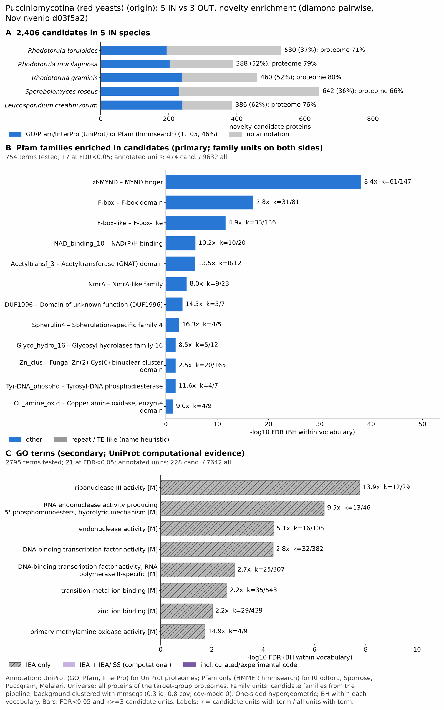

yc pucciniomycotina: functional enrichment (novelty)
One-sided hypergeometric test per term; Benjamini-Hochberg FDR within each scope, level and vocabulary. Candidates are the novelty candidates: gene families present in the IN group and absent from the OUT group. Universe: proteome. Background clustered: True (38432 sequences in 16166 clusters, mmseqs easy-cluster --min-seq-id 0.3 -c 0.8). Family level: one unit per candidate family and per background cluster.
Sources: Pfam: 2026-01-27-Pfam38.2; InterPro entries: 110.0; GO: releases/2026-07-26; analysis generated 2026-10-24T14:42:16. Source tables: /bigdata/stajichlab/jstajich/projects/NovInvenio_Investigations/studies/fungi/yeast_convergence/yc_pucciniomycotina/analysis/enrichment/outputs/proteome_clustered.
Full record: PROVENANCE. Run report: report.html.
Related: yeast_convergence: comparison across contrasts
- Annotation provenance is not fully recorded: PROVENANCE.yaml lists the per-species annotation files and their checksums, but not the UniProt release they come from.
- GO results are secondary. GO annotations include computational evidence (IEA, IBA); the GO evidence column shows if a term has non-IEA support.
- Candidate families (pipeline clustering of candidates) and background clusters (mmseqs clustering of the background proteome) are made by different runs, so family-level counts are not fully comparable.
- Low annotation: the candidate set has less than 50% annotation for Pfam 37.3%, InterPro 28.1%, GO 14.0%, any vocabulary 45.9%. Enrichment for these vocabularies has low power.
- GO and InterPro cover only 3 of 5 species: Rhodmuci, Rhodgram, Leuccrea. No GO and InterPro annotation for Rhodtoru, Sporrose; these species add no units to the GO and InterPro tests, so those results describe the covered species only.
Summary figure

Annotation coverage
Fraction of proteins with at least one term per vocabulary. Universe = all proteins of the species; candidates = the candidate set.
| Species | Set | Proteins | Pfam | Pfam clan | InterPro | GO | Any |
|---|---|---|---|---|---|---|---|
| Rhodtoru | universe | 8140 | 71.3% | 58.4% | 0.0% | 0.0% | 71.3% |
| Rhodtoru | candidates | 530 | 36.6% | 30.2% | 0.0% | 0.0% | 36.6% |
| Rhodmuci | universe | 7020 | 72.2% | 58.9% | 78.5% | 67.1% | 78.9% |
| Rhodmuci | candidates | 388 | 34.5% | 27.6% | 51.3% | 24.7% | 52.1% |
| Rhodgram | universe | 7225 | 74.0% | 60.5% | 80.0% | 68.4% | 80.3% |
| Rhodgram | candidates | 460 | 37.6% | 30.6% | 51.7% | 26.1% | 52.0% |
| Sporrose | universe | 8625 | 66.4% | 53.8% | 0.0% | 0.0% | 66.4% |
| Sporrose | candidates | 642 | 35.8% | 30.1% | 0.0% | 0.0% | 35.8% |
| Leuccrea | universe | 9828 | 67.6% | 56.0% | 75.9% | 60.9% | 76.1% |
| Leuccrea | candidates | 386 | 43.3% | 36.3% | 61.9% | 31.1% | 62.2% |
| ALL_IN | universe | 40838 | 70.0% | 57.3% | 45.9% | 38.3% | 74.3% |
| ALL_IN | candidates | 2406 | 37.3% | 30.8% | 28.1% | 14.0% | 45.9% |
Tests summary
Per vocabulary: terms with FDR < 0.05 / terms tested. Protein level counts proteins; family level counts candidate families and background clusters.
| Scope | Level | Cand. units | Pfam sig / tested | Pfam clan sig / tested | InterPro sig / tested | GO sig / tested |
|---|---|---|---|---|---|---|
| whole_set | family | 1319 | 17 / 754 | 4 / 296 | 17 / 1294 | 21 / 2795 |
| whole_set | protein | 2406 | 67 / 3588 | 17 / 460 | 51 / 2857 | 71 / 3994 |
| Leuccrea | family | 330 | 7 / 266 | 2 / 210 | 12 / 698 | 10 / 2209 |
| Leuccrea | protein | 386 | 9 / 355 | 4 / 233 | 17 / 911 | 20 / 2377 |
| Rhodgram | family | 416 | 4 / 210 | 1 / 197 | 8 / 583 | 6 / 2160 |
| Rhodgram | protein | 460 | 5 / 266 | 2 / 211 | 9 / 715 | 13 / 2239 |
| Rhodmuci | family | 368 | 3 / 226 | 3 / 200 | 7 / 626 | 0 / 1851 |
| Rhodmuci | protein | 388 | 3 / 258 | 3 / 205 | 7 / 705 | 0 / 1904 |
| Rhodtoru | family | 459 | 7 / 361 | 3 / 198 | 0 / 0 (not_available_no_annotated_units) | 0 / 0 (not_available_no_annotated_units) |
| Rhodtoru | protein | 530 | 10 / 420 | 3 / 215 | 0 / 0 (not_available_no_annotated_units) | 0 / 0 (not_available_no_annotated_units) |
| Sporrose | family | 465 | 6 / 341 | 3 / 199 | 0 / 0 (not_available_no_annotated_units) | 0 / 0 (not_available_no_annotated_units) |
| Sporrose | protein | 642 | 7 / 420 | 3 / 218 | 0 / 0 (not_available_no_annotated_units) | 0 / 0 (not_available_no_annotated_units) |
Top 25 Pfam terms (whole set, family level)
25 rows shown, ordered by FDR then p-value; 17 have FDR < 0.05 (bold).
| Term | Name | k / N cand. | n / M bg | Fold | FDR (BH) |
|---|---|---|---|---|---|
| PF01753 | zf-MYND: MYND finger | 61 / 474 | 147 / 9632 | 8.432 | 8.78e-39 |
| PF00646 | F-box: F-box domain | 31 / 474 | 81 / 9632 | 7.777 | 9.70e-18 |
| PF12937 | F-box-like: F-box-like | 33 / 474 | 136 / 9632 | 4.931 | 2.24e-12 |
| PF13460 | NAD_binding_10: NAD(P)H-binding | 10 / 474 | 20 / 9632 | 10.16 | 1.69e-06 |
| PF13302 | Acetyltransf_3: Acetyltransferase (GNAT) domain | 8 / 474 | 12 / 9632 | 13.547 | 2.04e-06 |
| PF05368 | NmrA: NmrA-like family | 9 / 474 | 23 / 9632 | 7.952 | 8.69e-05 |
| PF09362 | DUF1996: Domain of unknown function (DUF1996) | 5 / 474 | 7 / 9632 | 14.515 | 5.89e-04 |
| PF12138 | Spherulin4: Spherulation-specific family 4 | 4 / 474 | 5 / 9632 | 16.257 | 0.003 |
| PF00722 | Glyco_hydro_16: Glycosyl hydrolases family 16 | 5 / 474 | 12 / 9632 | 8.467 | 0.012 |
| PF00172 | Zn_clus: Fungal Zn(2)-Cys(6) binuclear cluster domain | 20 / 474 | 165 / 9632 | 2.463 | 0.012 |
| PF06087 | Tyr-DNA_phospho: Tyrosyl-DNA phosphodiesterase | 4 / 474 | 7 / 9632 | 11.612 | 0.012 |
| PF01179 | Cu_amine_oxid: Copper amine oxidase, enzyme domain | 4 / 474 | 9 / 9632 | 9.031 | 0.038 |
| PF01285 | TEA: TEA/ATTS domain | 4 / 474 | 10 / 9632 | 8.128 | 0.049 |
| PF13508 | Acetyltransf_7: Acetyltransferase (GNAT) domain | 5 / 474 | 17 / 9632 | 5.977 | 0.049 |
| PF00035 | dsrm: Double-stranded RNA binding motif | 3 / 474 | 5 / 9632 | 12.192 | 0.049 |
| PF14622 | Ribonucleas_3_3: Ribonuclease-III-like | 3 / 474 | 5 / 9632 | 12.192 | 0.049 |
| PF30774 | DUF8730: Domain of unknown function (DUF8730) | 3 / 474 | 5 / 9632 | 12.192 | 0.049 |
| PF00903 | Glyoxalase: Glyoxalase/Bleomycin resistance protein/Dioxygenase superfamily | 3 / 474 | 6 / 9632 | 10.16 | 0.089 |
| PF00447 | HSF_DNA-bind: HSF-type DNA-binding | 7 / 474 | 38 / 9632 | 3.743 | 0.089 |
| PF28371 | Clampless_N: Clampless protein 1 N-terminal domain | 3 / 474 | 7 / 9632 | 8.709 | 0.135 |
| PF01370 | Epimerase: NAD dependent epimerase/dehydratase family | 6 / 474 | 32 / 9632 | 3.81 | 0.150 |
| PF28419 | WetA_C: WetA C-terminal domain | 3 / 474 | 8 / 9632 | 7.62 | 0.189 |
| PF00583 | Acetyltransf_1: Acetyltransferase (GNAT) family | 6 / 474 | 37 / 9632 | 3.295 | 0.286 |
| PF11951 | Fungal_trans_2: Fungal specific transcription factor domain | 3 / 474 | 10 / 9632 | 6.096 | 0.344 |
| PF00334 | NDK: Nucleoside diphosphate kinase | 2 / 474 | 5 / 9632 | 8.128 | 0.569 |
Top 25 InterPro terms (whole set, family level)
25 rows shown, ordered by FDR then p-value; 17 have FDR < 0.05 (bold).
| Term | Name | k / N cand. | n / M bg | Fold | FDR (BH) |
|---|---|---|---|---|---|
| IPR032675 | Homologous_superfamily:Leucine-rich repeat domain superfamily | 63 / 459 | 293 / 9438 | 4.421 | 1.74e-21 |
| IPR001810 | Domain:F-box domain | 42 / 459 | 145 / 9438 | 5.956 | 4.30e-19 |
| IPR036047 | Homologous_superfamily:F-box-like domain superfamily | 37 / 459 | 125 / 9438 | 6.086 | 3.88e-17 |
| IPR000999 | Domain:Ribonuclease III domain | 12 / 459 | 26 / 9438 | 9.49 | 2.55e-07 |
| IPR036389 | Homologous_superfamily:Ribonuclease III, endonuclease domain superfamily | 12 / 459 | 29 / 9438 | 8.508 | 9.58e-07 |
| IPR002893 | Domain:Zinc finger, MYND-type | 19 / 459 | 85 / 9438 | 4.596 | 3.62e-06 |
| IPR000182 | Domain:GNAT domain | 14 / 459 | 53 / 9438 | 5.431 | 2.63e-05 |
| IPR008030 | Domain:NmrA-like domain | 8 / 459 | 19 / 9438 | 8.658 | 2.21e-04 |
| IPR018535 | Domain:Domain of unknown function DUF1996 | 5 / 459 | 6 / 9438 | 17.135 | 2.21e-04 |
| IPR016181 | Homologous_superfamily:Acyl-CoA N-acyltransferase | 14 / 459 | 67 / 9438 | 4.297 | 4.01e-04 |
| IPR010347 | Family:Tyrosyl-DNA phosphodiesterase I | 4 / 459 | 5 / 9438 | 16.45 | 0.003 |
| IPR021986 | Family:Spherulation-specific family 4 | 4 / 459 | 5 / 9438 | 16.45 | 0.003 |
| IPR051164 | Family:NmrA-like oxidoreductase | 5 / 459 | 10 / 9438 | 10.281 | 0.005 |
| IPR016040 | Domain:NAD(P)-binding domain | 5 / 459 | 13 / 9438 | 7.908 | 0.023 |
| IPR000269 | Family:Copper amine oxidase | 4 / 459 | 8 / 9438 | 10.281 | 0.025 |
| IPR015798 | Domain:Copper amine oxidase, catalytic domain | 4 / 459 | 8 / 9438 | 10.281 | 0.025 |
| IPR036460 | Homologous_superfamily:Copper amine oxidase, catalytic domain superfamily | 4 / 459 | 8 / 9438 | 10.281 | 0.025 |
| IPR001293 | Domain:Zinc finger, TRAF-type | 4 / 459 | 10 / 9438 | 8.225 | 0.066 |
| IPR031127 | Family:E3 ubiquitin ligase RBR family | 4 / 459 | 11 / 9438 | 7.477 | 0.094 |
| IPR036291 | Homologous_superfamily:NAD(P)-binding domain superfamily | 21 / 459 | 216 / 9438 | 1.999 | 0.123 |
| IPR000757 | Domain:Beta-glucanase-like, N-terminal domain | 5 / 459 | 20 / 9438 | 5.141 | 0.138 |
| IPR021858 | Family:Fungal transcription factor | 3 / 459 | 10 / 9438 | 6.169 | 0.597 |
| IPR052523 | Family:Acetyltransferase SAT19-like | 3 / 459 | 10 / 9438 | 6.169 | 0.597 |
| IPR001138 | Domain:Zn(2)Cys(6) fungal-type DNA-binding domain | 16 / 459 | 175 / 9438 | 1.88 | 0.600 |
| IPR036908 | Homologous_superfamily:RlpA-like domain superfamily | 5 / 459 | 31 / 9438 | 3.316 | 0.769 |
Top 15 GO terms (whole set, family level) — secondary, computational evidence (IEA/IBA) included
15 rows shown, ordered by FDR then p-value; 15 have FDR < 0.05 (bold).
| Term | Name | k / N cand. | n / M bg | Fold | FDR (BH) | GO evidence | Families with non-IEA |
|---|---|---|---|---|---|---|---|
| GO:0004525 | molecular_function:ribonuclease III activity | 12 / 228 | 29 / 7642 | 13.869 | 1.73e-08 | IEA_only | 0 |
| GO:0032296 | molecular_function:double-stranded RNA-specific ribonuclease activity | 12 / 228 | 29 / 7642 | 13.869 | 1.73e-08 | IEA_only | 0 |
| GO:0016891 | molecular_function:RNA endonuclease activity producing 5'-phosphomonoesters, hydrolytic mechanism | 13 / 228 | 46 / 7642 | 9.472 | 4.18e-07 | IEA_only | 0 |
| GO:0004521 | molecular_function:RNA endonuclease activity | 13 / 228 | 65 / 7642 | 6.704 | 3.06e-05 | IEA_only | 0 |
| GO:0004519 | molecular_function:endonuclease activity | 16 / 228 | 105 / 7642 | 5.107 | 3.85e-05 | IEA_only | 0 |
| GO:0003700 | molecular_function:DNA-binding transcription factor activity | 32 / 228 | 382 / 7642 | 2.808 | 4.07e-05 | IEA_only | 0 |
| GO:0004540 | molecular_function:RNA nuclease activity | 13 / 228 | 89 / 7642 | 4.896 | 7.93e-04 | IEA_only | 0 |
| GO:0140110 | molecular_function:transcription regulator activity | 32 / 228 | 451 / 7642 | 2.378 | 0.001 | IEA_only | 0 |
| GO:0000981 | molecular_function:DNA-binding transcription factor activity, RNA polymerase II-specific | 25 / 228 | 307 / 7642 | 2.729 | 0.001 | IEA_only | 0 |
| GO:0004518 | molecular_function:nuclease activity | 16 / 228 | 149 / 7642 | 3.599 | 0.002 | IEA_only | 0 |
| GO:0046914 | molecular_function:transition metal ion binding | 35 / 228 | 543 / 7642 | 2.16 | 0.003 | IEA_only | 0 |
| GO:0008270 | molecular_function:zinc ion binding | 29 / 228 | 439 / 7642 | 2.214 | 0.010 | IEA_only | 0 |
| GO:0008131 | molecular_function:primary methylamine oxidase activity | 4 / 228 | 9 / 7642 | 14.897 | 0.018 | IEA_only | 0 |
| GO:0005507 | molecular_function:copper ion binding | 6 / 228 | 26 / 7642 | 7.735 | 0.018 | IEA_only | 0 |
| GO:0097621 | molecular_function:monoamine oxidase activity | 4 / 228 | 10 / 7642 | 13.407 | 0.026 | IEA_only | 0 |
Actin cytoskeleton controls
Known actin-related families and how many of their proteins pass each filter. Protein ID columns are left out.
| control | pfam_ids | desc_regex | IN_universe | IN_in_matrix | IN_pass_ingroup_rule | candidates | near_miss_out1 | near_miss_out2 | n_Rhodtoru | n_Rhodmuci | n_Rhodgram | n_Sporrose | n_Leuccrea | n_Micrlych | n_Puccgram | n_Melalari |
|---|---|---|---|---|---|---|---|---|---|---|---|---|---|---|---|---|
| Arp2/3 ARPC2 (P34-Arc) | PF04045 | 5 | 5 | 5 | 0 | 0 | 5 | 1 | 1 | 1 | 1 | 1 | 1 | 1 | 0 | |
| Arp2/3 ARPC3 (P21-Arc) | PF04062 | 4 | 4 | 4 | 0 | 0 | 0 | 1 | 1 | 1 | 1 | 0 | 1 | 1 | 1 | |
| Arp2/3 ARPC4 | PF05856 | 5 | 5 | 5 | 0 | 0 | 0 | 1 | 1 | 1 | 1 | 1 | 1 | 1 | 2 | |
| Arp2/3 ARPC5 (P16-Arc) | PF04699 | 5 | 5 | 5 | 0 | 0 | 0 | 1 | 1 | 1 | 1 | 1 | 1 | 1 | 1 | |
| Arp2/3 ARPC1 (description only) | arp2/3 complex.*(41|p41|subunit 1)|ARPC1 | 2 | 2 | 2 | 0 | 0 | 0 | 0 | 1 | 1 | 0 | 0 | 0 | 0 | 0 | |
| Arp2 / Arp3 (description only) | actin-related protein (2|3)\b|\bARP[23]\b | 25 | 25 | 25 | 1 | 0 | 4 | 6 | 8 | 6 | 0 | 5 | 6 | 0 | 0 | |
| WAVE complex NCKAP1 | PF09735 | 0 | 0 | 0 | 0 | 0 | 0 | 0 | 0 | 0 | 0 | 0 | 0 | 0 | 0 | |
| WAVE complex CYFIP (FragX_IP) | PF05994 | 0 | 0 | 0 | 0 | 0 | 0 | 0 | 0 | 0 | 0 | 0 | 0 | 0 | 0 | |
| WAVE complex ABI | PF07815|PF27594 | 0 | 0 | 0 | 0 | 0 | 0 | 0 | 0 | 0 | 0 | 0 | 0 | 0 | 0 | |
| SCAR/WAVE (SCAR_helical) | PF27569 | 0 | 0 | 0 | 0 | 0 | 0 | 0 | 0 | 0 | 0 | 0 | 0 | 0 | 0 | |
| WASP family (WH1) | PF00568 | 5 | 5 | 5 | 0 | 0 | 0 | 1 | 1 | 1 | 1 | 1 | 1 | 2 | 2 | |
| WH2 motif (WASP, WAVE, others) | PF02205 | 10 | 10 | 10 | 0 | 1 | 3 | 1 | 2 | 3 | 2 | 2 | 2 | 1 | 2 | |
| Formin FH2 | PF02181 | 9 | 9 | 9 | 0 | 0 | 0 | 2 | 2 | 1 | 2 | 2 | 2 | 1 | 2 | |
| Formin Drf_GBD / Drf_FH3 / Drf_DAD | PF06371|PF06367|PF06345 | 16 | 16 | 16 | 0 | 0 | 0 | 3 | 3 | 4 | 3 | 3 | 2 | 3 | 3 | |
| Ena/VASP (VASP_tetra) | PF08776 | 0 | 0 | 0 | 0 | 0 | 0 | 0 | 0 | 0 | 0 | 0 | 0 | 0 | 0 | |
| Coronin (description only) | coronin | 5 | 5 | 5 | 0 | 0 | 0 | 1 | 2 | 1 | 0 | 1 | 1 | 0 | 0 | |
| Cortactin (HS1_rep) | PF02218 | 0 | 0 | 0 | 0 | 0 | 0 | 0 | 0 | 0 | 0 | 0 | 0 | 0 | 0 | |
| Myosin 2 tail (Myosin_tail_1) | PF01576 | 0 | 0 | 0 | 0 | 0 | 0 | 0 | 0 | 0 | 0 | 0 | 0 | 0 | 0 | |
| Myosin head (all myosins) | PF00063 | 25 | 25 | 25 | 0 | 0 | 0 | 5 | 5 | 5 | 5 | 5 | 5 | 5 | 7 |
Page written by bin/generate_enrichment_page.py.